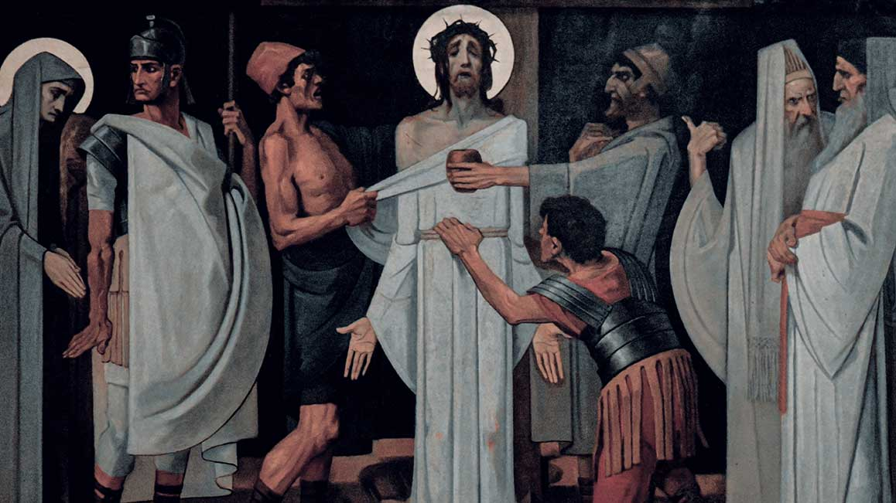

Salve
Regina

Com estas orações escritas por Santo Afonso Maria de Ligório, convido você a refazer conosco o caminho que Nosso Senhor percorreu, carregando a Cruz, desde o pretório de Pilatos até o monte Calvário.
Oração inicial. — Senhor Jesus Cristo, vós com tanto amor entrastes nesta via para morrerdes por mim; eu porém tantas vezes vos desprezei! Agora, de toda a minha alma vos amo e, porque vos amo, arrependo-me do fundo do coração de ter-vos ofendido. Perdoai-me e permiti que vos acompanhe nesta via. Vós, por amor a mim, caminhais para o lugar em que por mim haveis de morrer, e eu também, por amor a vós, desejo acompanhar-vos para convosco morrer, amantíssimo Redentor. Ó meu Jesus, desejo convosco viver e morrer!
℣. Nós vos adoramos, ó Cristo, e vos bendizemos.
℟. Porque, por vossa santa Cruz, redimistes o mundo.
Contemplemos como Jesus Cristo, já flagelado e coroado de espinhos, foi por fim injustamente condenado à morte por Pilatos.
Oração. — Ó Jesus adorável, não foi Pilatos, mas minha vida iníqua que vos condenou à morte. Pelo mérito deste tão penoso itinerário, no qual entrais rumo ao monte Calvário, peço-vos que benignamente me acompanheis no caminho pelo qual minha alma se dirige à eternidade. Amo-vos, ó Jesus, meu Amor, mais do que a mim mesmo, e do fundo do coração me arrependo de ter-vos ofendido. Não permitais que eu novamente me separe de vós. Dai-me amor perpétuo a vós e fazei de mim o que quiserdes. O que vos for agradável também o será para mim.
A morrer crucificado, Teu Jesus é condenado Por teus crimes, pecador. Pela Virgem dolorosa, Vossa Mãe tão piedosa, Perdoai-me, meu Jesus.
℣. Nós vos adoramos, ó Cristo, e vos bendizemos.
℟. Porque, por vossa santa Cruz, redimistes o mundo.
Contemplemos como Jesus Cristo, levando a Cruz aos ombros, lembrava-se no caminho de oferecer por nós ao Pai eterno a morte que havia de sofrer.
Oração. — Ó amabilíssimo Jesus, abraço todas as adversidades que, por vossa vontade, hei de tolerar até a morte e, pelo duro sofrimento que suportastes carregando a Cruz, peço-vos que me deis forças para que também eu possa carregar, com ânimo forte e paciente, minha própria cruz. Amo-vos, ó Jesus, meu Amor, e arrependo-me de ter-vos ofendido. Não permitais que novamente me separe de ti. Dai-me amor perpétuo a vós e fazei de mim o que quiserdes.
Com a Cruz é carregado, E do peso acabrunhado, Vai morrer por teu amor. Pela Virgem dolorosa, Vossa Mãe tão piedosa, Perdoai-me, meu Jesus.
℣. Nós vos adoramos, ó Cristo, e vos bendizemos.
℟. Porque, por vossa santa Cruz, redimistes o mundo.
Contemplemos a primeira queda de Jesus sob o peso da Cruz. Tinha Ele a carne, por causa da cruenta flagelação, ferida de muitos modos e a cabeça coroada de espinhos; derramara ainda tanto sangue, que mal podia mover os pés por falta de forças. E porque era oprimido pelo grave peso da Cruz e açulado sem clemência pelos soldados, por isso aconteceu-lhe de cair muitas vezes por terra ao longo do caminho.
Oração. — Ó meu Jesus, não é o peso da Cruz, mas o dos meus pecados que de tantas dores vos cobre. Rogo-vos, por esta vossa primeira queda, que me protejais de toda queda em pecado. Amo-vos, ó Jesus, de todo o meu coração; arrependo-me de ter-vos ofendido. Não me permitais novamente cair em pecado. Dai-me amor perpétuo a vós e fazei de mim o que quiserdes.
Pela Cruz tão oprimido, Cai Jesus, desfalecido, Pela tua salvação. Pela Virgem dolorosa, Vossa Mãe tão piedosa, Perdoai-me, meu Jesus.
℣. Nós vos adoramos, ó Cristo, e vos bendizemos.
℟. Porque, por vossa santa Cruz, redimistes o mundo.
Contemplemos como deve ter sido o encontro, neste caminho, do Filho e da Mãe. Jesus e Maria se olharam entre si, e os olhares mudos que trocaram foram outras tantas setas a atravessar o coração amante de ambos.
Oração. — Ó amantíssimo Jesus, pela dor acerba que experimentastes neste encontro, tornai-me, eu vos peço, verdadeiramente devoto de vossa Mãe santíssima. E vós, ó minha dolorosa Rainha, intercedei por mim e alcançai-me uma tal memória dos suplícios de vosso Filho, que minha mente esteja para sempre detida na piedosa contemplação deles. Amo-vos, ó Jesus, meu Amor; arrependo-me de ter-vos ofendido. Não me permitais novamente pecar contra vós. Dai-me amor perpétuo a vós e fazei de mim o que quiserdes.
De Maria lacrimosa, No encontro lastimosa, Vê a imensa compaixão. Pela Virgem dolorosa, Vossa Mãe tão piedosa, Perdoai-me, meu Jesus.
℣. Nós vos adoramos, ó Cristo, e vos bendizemos.
℟. Porque, por vossa santa Cruz, redimistes o mundo.
Contemplemos como os judeus obrigaram Simão de Cirene a carregar a Cruz atrás do Senhor, vendo Jesus quase expirar a cada passo devido ao cansaço e temendo, por outra parte, que morresse no caminho aquele que queriam ver pregado à Cruz.
Oração. — Ó dulcíssimo Jesus, não quero, como o Cirineu, repudiar a Cruz. De bom grado a abraço e tomo sobre mim; abraço especialmente a morte que para mim estabelecestes, com todas as dores que ela trará consigo. Uno minha morte à vossa e, assim unida, ofereço-a a vós em sacrifício. Vós morrestes por amor a mim; quero também eu morrer por amor a vós, com a intenção de vos agradar. Vós, porém, ajudai-me com a vossa graça. Amo-vos, ó Jesus, meu Amor, e arrependo-me de ter-vos ofendido. Não permitais que eu novamente vos ofenda. Dai-me amor perpétuo a vós e fazei de mim o que quiserdes.
Em extremo desmaiado, Teve auxílio, tão cansado, Recebendo o Cireneu. Pela Virgem dolorosa, Vossa Mãe tão piedosa, Perdoai-me, meu Jesus.
℣. Nós vos adoramos, ó Cristo, e vos bendizemos.
℟. Porque, por vossa santa Cruz, redimistes o mundo.
Contemplemos como aquela santa mulher Verônica, vendo Jesus abatido pelas dores, com o rosto banhado em suor e sangue, estendeu-lhe um pano em que, purificada a face, Ele deixou impressa sua imagem.
Oração. — Ó meu Jesus, formosa era antes a vossa face; mas agora não aparece assim, tão deformada está por feridas e sangue! Ai de mim, como era formosa também minha alma, quando recebi a vossa graça pelo Batismo: mas, pecando, tornei-a disforme. Vós somente, meu Redentor, lhe podeis restituir a antiga beleza. Para que o façais, rogo-vos pelo mérito de vossa Paixão. Amo-vos, ó Jesus, meu Amor; arrependo-me de ter-vos ofendido. Não permitais que eu novamente vos ofenda. Dai-me amor perpétuo a vós e fazei de mim o que quiserdes.
O seu rosto ensanguentado, Por Verônica enxugado, Eis, no pano, apareceu. Pela Virgem dolorosa, Vossa Mãe tão piedosa, Perdoai-me, meu Jesus.
℣. Nós vos adoramos, ó Cristo, e vos bendizemos.
℟. Porque, por vossa santa Cruz, redimistes o mundo.
ontemplemos a segunda queda de Jesus sob o peso da Cruz, na qual se lhe aprofundam todas as chagas da venerável cabeça e de todo o corpo, e se renovam todas as angústias do doloroso Senhor.
Oração. — Ó mansíssimo Jesus, quantas vezes me concedestes o perdão! Eu, porém, recaí nos mesmos pecados e renovei minhas ofensas contra vós. Pelo mérito desta vossa nova queda, ajudai-me a perseverar em vossa graça até a morte. Fazei, em todas as tentações que avançarão contra mim, que em vós sempre me refugie. Amo-vos de todo o meu coração, ó Jesus, meu Amor; arrependo-me de ter-vos ofendido. Não permitais que eu novamente vos ofenda. Dai-me amor perpétuo a vós e fazei de mim o que quiserdes.
Outra vez desfalecido, Pelas dores abatido, Cai por terra o Salvador. Pela Virgem dolorosa, Vossa Mãe tão piedosa, Perdoai-me, meu Jesus.
℣. Nós vos adoramos, ó Cristo, e vos bendizemos.
℟. Porque, por vossa santa Cruz, redimistes o mundo.
Contemplemos como estas mulheres, vendo Jesus morto de cansaço e coberto de sangue, são tocadas de comiseração e choram copiosamente. Mas, voltando-se a elas, Ele diz: “Não choreis por mim; antes, chorai por vós mesmas e por vossos filhos”.
Oração. — Ó doloroso Jesus, choro os pecados que cometi contra vós, não só pelas penas de que me fizeram digno, mas sobretudo pela tristeza que vos causaram a vós, que tanto me amastes. Ao choro me move menos o inferno que o amor a vós. Ó meu Jesus, amo-vos mais do que a mim mesmo; arrependo-me de ter-vos ofendido. Não permitais que eu novamente vos ofenda. Dai-me amor perpétuo a vós e fazei de mim o que quiserdes.
Das mulheres piedosas, De Sião filhas chorosas, É Jesus consolador. Pela Virgem dolorosa, Vossa Mãe tão piedosa, Perdoai-me, meu Jesus.
℣. Nós vos adoramos, ó Cristo, e vos bendizemos.
℟. Porque, por vossa santa Cruz, redimistes o mundo.
Contemplemos a terceira queda de Cristo sob o peso da Cruz. Caiu porque era demasiada a sua fraqueza e excessiva a crueldade dos algozes, que lhe queriam acelerar a marcha, embora Ele mal pudesse dar um passo.
Oração. — Ó Jesus tão maltratado, pelo mérito desta falta de forças que quisestes padecer no caminho do Calvário, confortai-me, eu vos peço, com tanto vigor, que já não tenha respeito algum às opiniões dos homens e domine minha natureza viciosa: porque ambas as coisas foram a causa por que desprezei outrora a vossa amizade. Amo-vos, ó Jesus, meu Amor, de todo o meu coração; arrependo-me de ter-vos ofendido. Não permitais que eu novamente vos ofenda. Dai-me amor perpétuo a vós e fazei de mim o que quiserdes.
Cai, terceira vez, prostrado, Pelo peso redobrado Dos pecados e da Cruz. Pela Virgem dolorosa, Vossa Mãe tão piedosa, Perdoai-me, meu Jesus.

℣. Nós vos adoramos, ó Cristo, e vos bendizemos.
℟. Porque, por vossa santa Cruz, redimistes o mundo.
Contemplemos com que violência arrancaram as vestes a Cristo. Como o traje interior estivesse muito pegado à carne, aberta pelos flagelos, os carnífices, ao puxarem-lha, rasgaram-lhe também a pele. Tenhamos compaixão de Nosso Senhor e lhe falemos assim:
Oração. — Ó inocentíssimo Jesus, pelo mérito da dor que padecestes nesta espoliação, ajudai-me, eu vos peço, a despir-me de todo afeto às coisas criadas e, com toda a inclinação de minha vontade, converter-me somente a vós, que sois tão digno do meu amor. Amo-vos de todo o meu coração; arrependo-me de ter-vos ofendido. Não permitais que eu novamente vos ofenda. Dai-me amor perpétuo a vós e fazei de mim o que quiserdes.
Dos vestidos despojado, Por algozes maltratado, Eu vos vejo, meu Jesus. Pela Virgem dolorosa, Vossa Mãe tão piedosa, Perdoai-me, meu Jesus.
℣. Nós vos adoramos, ó Cristo, e vos bendizemos.
℟. Porque, por vossa santa Cruz, redimistes o mundo.
Contemplemos como Jesus é arremessado sobre a Cruz e, de braços estendidos, oferece sua vida ao Pai eterno em sacrifício pela nossa salvação. Os carnífices o pregam à Cruz e, depois de erguerem esta, deixam-no levantado num infame patíbulo, abandonado a uma morte cruel.
Oração. — Ó Jesus tão desprezado, pregai meu coração aos vossos pés, para que, com vínculo de amor, eu permaneça sempre a vós ligado e jamais seja de vós separado. Amo-vos mais do que a mim mesmo, arrependo-me de ter-vos ofendido. Não permitais que eu novamente vos ofenda. Dai-me amor perpétuo a vós e fazei de mim o que quiserdes.
Sois por mim na Cruz pregado, Insultado, blasfemado, Com cegueira e com furor. Pela Virgem dolorosa, Vossa Mãe tão piedosa, Perdoai-me, meu Jesus.
℣. Nós vos adoramos, ó Cristo, e vos bendizemos.
℟. Porque, por vossa santa Cruz, redimistes o mundo.
Contemplemos Jesus preso à nossa Cruz. Após três horas de luta, consumido enfim pelas dores, Ele deu o corpo à morte e, de cabeça inclinada, entregou o espírito.
Oração. — Ó Jesus morto, movido por íntimos afetos de piedade, beijo esta Cruz em que vós, por minha causa, cumpristes o curso de vossa vida. Pelos pecados cometidos, mereci uma morte infeliz; mas vossa morte é minha esperança. Pelos méritos de vossa morte, concedei-me, peço-vos, que, abraçado aos vossos pés e abrasado de amor por vós, eu entregue um dia meu espírito. Amo-vos de todo o meu coração; arrependo-me de ter-vos ofendido. Não permitais que eu novamente vos ofenda. Dai-me amor perpétuo a vós e fazei de mim o que quiserdes.
Por meus crimes padecestes, Meu Jesus, por mim morrestes, Oh, quão grande é minha dor! Pela Virgem dolorosa, Vossa Mãe tão piedosa, Perdoai-me, meu Jesus.
℣. Nós vos adoramos, ó Cristo, e vos bendizemos.
℟. Porque, por vossa santa Cruz, redimistes o mundo.
Contemplemos como dois dos discípulos de Jesus, José e Nicodemos, o tiram exânime da Cruz e o colocam nos braços de sua Mãe dolorosa, que recebe o Filho morto com grande amor e o abraça ternamente.
Oração. — Ó Mãe das Dores, pelo amor com que amais o vosso Filho, recebei-me como servo vosso e rogai a Ele por mim. E vós, ó meu Redentor, porque por mim morrestes, fazei, benignamente, com que eu vos ame; a vós somente desejo nem quero nada fora de vós. Amo-vos, ó Jesus, meu Amor, e arrependo-me de ter-vos ofendido. Não permitais que eu novamente vos ofenda. Dai-me amor perpétuo a vós e fazei de mim o que quiserdes.
Do madeiro vos tiraram E à Mãe vos entregaram Com que dor e compaixão! Pela Virgem dolorosa, Vossa Mãe tão piedosa, Perdoai-me, meu Jesus.
℣. Nós vos adoramos, ó Cristo, e vos bendizemos.
℟. Porque, por vossa santa Cruz, redimistes o mundo.
Contemplemos como os discípulos levam Jesus exânime ao lugar da sepultura. Triste, a Mãe os acompanha e com as próprias mãos acomoda o corpo do Filho à sepultura. Fecha-se este, enfim, e todos vão-se embora.
Oração. — Ó Jesus sepultado, beijo esta pedra que vos acolheu; mas, após três dias, haveis de ressurgir! Por vossa ressurreição, fazei-me, eu vos peço, ressurgir glorioso convosco no último dia e ir para o Céu, onde, unido a vós para sempre, vos hei de louvar e amar por toda a eternidade. Amo-vos e arrependo-me de ter-vos ofendido. Não permitais que eu novamente vos ofenda. Dai-me amor perpétuo a vós e fazei de mim o que quiserdes.
No sepulcro vos deixaram, Sepultado, vos choraram, Magoado o coração. Meu Jesus, por vossos passos, Recebei em vossos braços A mim, pobre pecador.
Oração final a Jesus crucificado. — Eis-me aqui, ó meu bom e dulcíssimo Jesus! Humildemente prostrado de joelhos em vossa presença, peço e suplico-vos, com todo o fervor de minha alma, que vos digneis gravar em meu coração os mais vivos sentimentos de fé, esperança e caridade, de verdadeiro arrependimento de meus pecados, e um firme propósito de emendar-me, enquanto vou considerando, com vivo afeto e dor, as vossas cinco chagas, tendo presentes as palavras que já o profeta Davi punha em vossa boca, ó bom Jesus: “Transpassaram minhas mãos e os meus pés e contaram todos os meus ossos” (Sl 21, 17).
A Nossa Senhora das Dores. — Ó Mãe das Dores, Rainha dos mártires, que tanto chorastes vosso Filho, morto para me salvar, alcançai-me uma verdadeira contrição dos meus pecados e uma sincera mudança de vida. Mãe, pela dor que experimentastes quando vosso divino Filho, no meio de tantos tormentos, inclinando a cabeça expirou à vossa vista sobre a cruz, eu vos suplico que me alcanceis uma boa morte. Por piedade, ó advogada dos pecadores, não deixeis de amparar a minha alma na aflição e no combate da terrível passagem desta vida à eternidade. E, como é possível que, neste momento, a palavra e a voz me faltem para pronunciar o vosso nome e o de Jesus, rogo-vos, desde já, a vós e a vosso divino Filho, que me socorrais nessa hora extrema, e assim direi: Jesus e Maria, entrego-vos a minha alma. Amém.